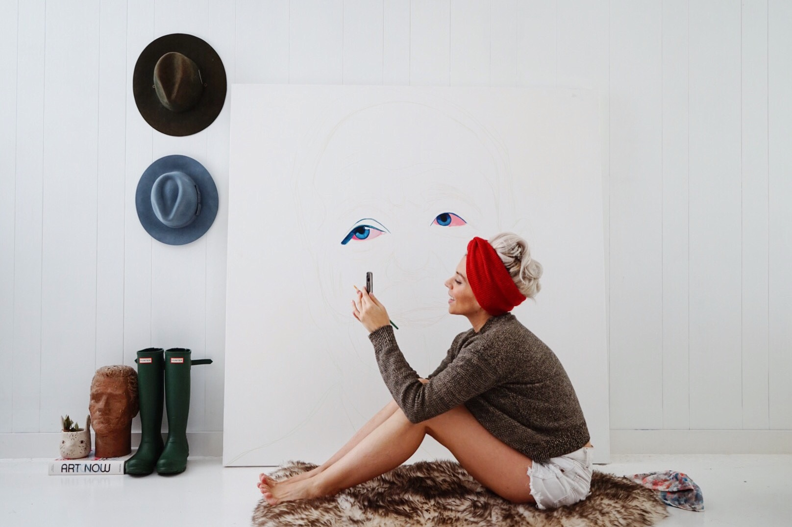

Bowerbirds - The Boweress
ALL THE COLOURS
20 May, 2016
When I think of Mexico, I think of colour, celebration and expressiveness, How does your Mexican heritage come out in your work?
I think my work would definitely be different if it weren’t for my foundation.I love that my country is loud and colorful – happy and proud.I didn’t realize the influencein my work till someone pointed it out haha…. and well duh ! of course!The hues in Mexico tend to be vibrant- houses are pink, benches are bright green, even the plants are ridiculously richly pigmented.
“all the colours” Colour is abundant in your work, how do you choose your palate or what is it informed by?
I enjoy doing homework on my subjects. If its a portrait I am doing of a client, I like getting to know them- what their drive is, what is their personality like? When its an actor or musician, I submerge in their work and study their films, read interviews, listen to their music. I connect colors in my paintings by who I feel my subjects are.
What does it mean to be a woman in 2018 for you?
I believe its a good time to be a lady – changes are happening. Changes you can see…. Its so fantastic to see women sticking together, for the present, for the future and as a reminder to the past of what will be no more.
International Womens day just passed, what are you doing as a female in the arts to push for progress?
I wish I were doing more!If anything (hopefully) I can inspire women to follow their paths that life has set for them. Especially if they have been told no. Thats the best. Challenge accepted.
You paint portraits of notable people within pop culture, what’s your favourite era and some women who are inspirations not only to your art but you personally?
I am a sucker for talent and “good faces” – the stronger the features the better.
My favorite era is probably the 18th century.It has always intrigued me! the fabrics, what kind of food did they eat? what did it look like? Paintings! where they really that accurate?Women who inspire me creatively at the moment are contemporary artist Yayoi Kusama, interior designer Kelly Wearstler,and comedians Ilana Glazer and Abbi Jacobson (love how they influence youth with humor and are great activists).
We love colour blocking and can see you do too…what’s your favourite colour combination?
LOVE me some color blocking! my all time favorite will be cobalt blue and cadmium red medium hue.
Where do you like to paint?
I am pretty private and enjoy being comfortable when I paint. I currentlyhave a home studio set up, which is great because I am by myself alot.Music, lots of light, my pet bunny and my work.
Where is your Bowery?
My husband and I are currently situated in San Diego California 🙂
How has social media had an impact on your career as an artist and what is your favourite platform and why?
Social media has been a great tool for me to share my work . Again – I think I’m a private person – so in the beginning it was weird for me to share a vulnerable time documented in a painting. People don’t see this- they just see a picture, for me its a piece where this or that happened and this painting was created during this time.
Instagram is my favorite, because of its instant self explanatory form. I am a visual person so instagram is just that.
There is an element of risk in every artwork produced, how have you carved your career to date? Through risk taking or a linear path from art school to artist for example.
I believe with time instead of being more free with my work, i am more concerned of making a bad move – which isn’t a good thing haha.
I consider each painting a risk – so many things to consider, time, material, emotions. Since I am self taught my greatest risk is to actually paint and create and believe in myself.
How do you maintain a creative state of mind?
This one is an ongoing challenge. Creative people just are… but just like you can just be creative, things (life) just happen and really can mess up your flow.
This past year was particularly difficult for me to reconnect creatively.I try to read books, study other artists ( because their success inspires me) and visit places that bring out a sense of creative urgency.
Do you deal well with deadlines/ commissions or paint at your own rate?
Ha! sometimes im great with deadlines, sometimes I freeze and choke and end up asking for one more week. I usually set realistic timelines so I dont let anyone down.
How does your current environment of San Diego influence and contribute to your art?
This is bad but im going to be completely honest….San Diego has zero influence in my work. NONE! but living in a city that is close to other places that do is fantastic.
Perhaps if I lived in Los Angeles permanently it wouldn’t inspire me as much as it does. I know for a fact if I moved back to Tijuana I would be creatively influenced but mostly emotionally stressed. Traffic is intense down there!
Do you have any daily/ regular rituals you will do in order to keep you focussed as we understand working for yourself/ freelance life can get distracted quite easily at times?
yes you speak the truth, ha! working for yourself has its perks but definitely so easy to wander. I usually wake up, make some coffee and breakfast for us – I wait for my husband to leave and i stare at my either blank canvas or started piece and see what i can do to balance my hues. Its a lot harder than it seems.When a piece has been started it goes through stages- when I’m halfway there, I usually always hate it. It drives me crazy. Seriously- i cant sleep at times because I cant turn that image off until things are balances and finished. Dramatic. I know.
Who are some female artists that have recently caught your eye in terms of pushing boundaries?
Yayoi Kusama ! all the way. She’s my daily inspo!
How important if at all is it to display the female aspect of yourself through your pieces?
Theres a piece of me in ever one of my works, whether I want to share or not. I believe the people that do know me on a personal level can see these elements.
I am feminine, I care about detail, I care about things looking good- I try to do this every time. If I don’t like it, I start again.

Processed with VSCO with a4 preset